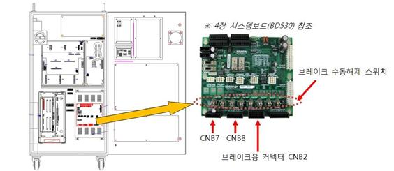
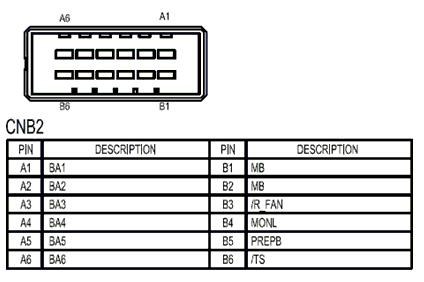
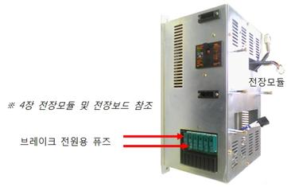
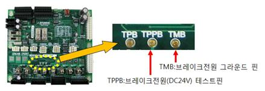
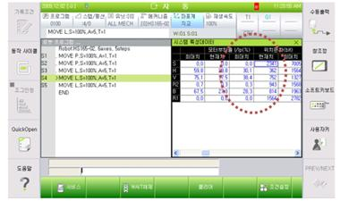
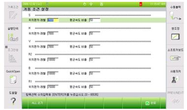
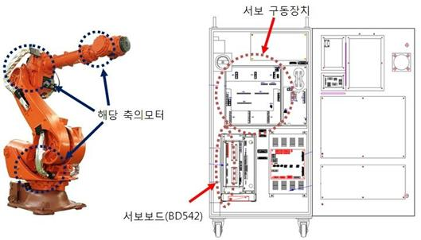

개 요
위치(속도)편차가 설정치 보다 큽니다. 서보제어에 의한 로봇 동작 중 이동명령위치와 실제위치와의 차이가 너무 큰 경우, 서보보드는 서보연산 중 에러를 감지하고 로봇을 정지시킵니다.
원인 및 점검방법
|
1. 에러가 발생한 축이 다른 설비와 기계적 간섭이 있는지 확인하십시오. 2. 브레이크 해제가 정상적으로 작동되는지 확인하십시오. 1) 개별 축 브레이크 해제 이상 점검 2) 브레이크용 전원이상 점검. 3. 배선상태를 점검하십시오. 4. 정격부하를 사용하지는 확인하십시오. 5. 위치편차 설정 레벨 오류 6. 기타의 부품을 교체하십시오.
|
1. 에러가 발생한 축이 다른 설비와 기계적 간섭이 있는지 확인하십시오.
로봇의 기구적 간섭 혹은 충돌이 있을 경우 이 에러가 발생할 수 있습니다. 제한영역을 벗어나 있을 경우에는 수동조작하여 안전영역으로 로봇을 이동시켜야 합니다.
2. 브레이크 해제가 정상적으로 작동되는지 확인하십시오.
해당 축 브레이크의 해제기능에 문제가 있거나 브레이크 해제전압의 이상일 수 있습니다.
1) 개별 축 브레이크 해제 이상 점검
모터전원을 제거한 후(모터OFF) 브레이크 수동스위치를 사용하여 해당 축의 브레이크가 해제되는지 확인하십시오. 브레이크 해제시 모터에서 나는 소리로 확인할 수 있습니다.

그림 1. 브레이크 수동해제 스위치의 위치
해당 축의 브레이크가 해제되지 않는다면 시스템보드의 브레이크 해제전압 출력상태를 확인해야 합니다. 브레이크 배선(CNB2, CNB7, CNB8 커넥터)을 제거하고 수동브레이크 스위치를 사용하여 브레이크전압을 출력하십시오. CNB2 또는 CNB7, CNB8커넥터에서 해당 축의 브레이크 전압이 20V이상으로 출력되는지 측정하십시오. 20V이하의 전압으로 출력되는 축이 있다면 시스템보드(BD530)의 고장이므로 교체하십시오.

그림 2. CNB2, CNB7 커넥터의 핀배치
2) 브레이크용 전원이상 점검.
“E0012 브레이크 전원이상”이라는 메시지가 같이 발생하였다면 브레이크 전원장치에 이상이 있는 것입니다. TP에서 “시스템 à 모니터링 à 2.입출력 신호 à 1.전용 입력신호” 창을 열어보면 “과부하(Brake전원)” 항목이 있습니다. 이것이 노란색으로 표시되어 있다면 전장모듈의 브레이크 전원용 퓨즈가 끊어진 것입니다. 해당 퓨즈를 교체하십시오.

그림 3. 전장모듈
퓨즈도 정상이라고면 시스템보드에서 브레이크 전원(DC24V)을 측정하십시오. 보드의 중앙부근에 3개의 테스트핀이 배치되어 있습니다. 이 중 TMB를 기준단자로 하여 TPPB단자의 값이 DC20V이상이 되어야 정상입니다. 만약 20V미만이라면 브레이크 전원을 생성하는 전원장치의 이상입니다. 전장모듈을 교체하십시오.

그림 4. 브레이크 전원 테스트핀
3. 배선상태를 점검하십시오.
모터배선(U, V, W상)이 다른 배선 또는 접지선(FG)과 단락되어 있는지 확인하십시오.
4. 정격부하를 사용하지는 확인하십시오.
작업 물을 포함하여 전체무게가 정격부하를 초과하고 있다면 해당 로봇의 사양서를 참조하여 정격 이내로 부하를 조정하십시오.
5. 위치편차 설정 레벨 오류
위치편차 설정치가 다음의 측정최대치 보다 작으면 설정치를 상향조정 하십시오.
수 싸이클 이상 동작시킨 후의 위치편차 측정최대치x1.5

그림 5. TP에서의 위치편차 측정최대치 모니터링 화면

그림 6. TP에서의 위치편차 설정치 변경화면
6. 기타의 부품을 교체하십시오.
서보보드(BD542) à 서보 구동장치 à 모터의 순으로 교체하여 에러발생 여부를 확인하십시오.
